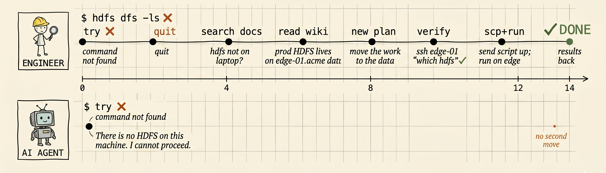

Copilot, Cursor, Claude Code. Tools are here. Somehow, your afternoon still looked like this
You still got ~48 minutes of real work, even with best AI tools.
The failure usually starts after the code is written — internal data, private packages, remote GPUs, auth, queues, logs. The moment the task leaves your laptop, the agent needs company-specific moves it doesn’t know how to make.
ssh to the edge node, kinit
--index-url, not public PyPI.
pyflyte run --remote, don’t run locally.
Different walls. Same ending: the agent stops, and you become the runtime.
Take Case A. The agent stops at “command not found.” The engineer treats that as a clue, not a conclusion — and finds the machine where the command exists.

The difference isn’t intelligence. It’s persistence after the first failed move. — retry doesn’t mean running the broken command twice. it means learning why it broke, then trying a different path.
One bad assumption breaks the chain. You step back in.
The team plans a route, hits a blocked road, recalculates, and keeps going until the destination checks pass.
You describe the outcome in English. The PM turns it into checks — shell commands, status queries, log scans, artifact assertions. The team can keep working, but it cannot declare victory unless the checks pass.
# end-state.yaml — auto-generated by the PM from your goal
checks:
# Case A — runs on the edge node, lands data in HDFS
— exec: ssh edge-01 'hdfs dfs -test -s /out/features/_SUCCESS' # exit 0
# Case B — the new feature actually runs end-to-end (proves deps resolved)
— exec: pytest tests/test_feature_pipeline.py -q # exit 0
# Case C — the agent must produce ${EXEC_ID} of a Flyte run on the cluster
— exec: flytectl get execution ${EXEC_ID} -o json | jq -e '.phase=="SUCCEEDED"' # exit 0
— exec: flytectl get logs ${EXEC_ID} | grep -q 'Training complete' # success signal
— exec: ! flytectl get logs ${EXEC_ID} | grep -qE 'ERROR|Traceback' # no errorsOne head cannot reliably plan, build, recover, and grade itself for hours — that’s why a loop alone doesn’t make an agent persistent.
Super Team isn’t a bigger prompt. It’s a harness system around the model: separate roles, persistent state, objective gates, and a manager that keeps the run alive.
Autocomplete gave us lines. Agents gave us small tasks.
The next leap is delegated delivery — work that continues while you’re gone.
You talk to the PM. The PM turns intent into acceptance criteria. Behind it, specialist sessions research, plan, build, verify, just like you've been doing manually all week.
You define the outcome. The team handles the route.
If it finishes, you get the PR and the evidence. If it can’t, you get the one question only you can answer.
less babysitting. more delegated work.
The same model produces dramatically different outcomes depending on what surrounds it. Context engineering, adversarial evaluation, and compounding memory are what turn a capable model into a reliable system — not a bigger prompt.
“Context is the scarcest resource.”
Every token filling the window with irrelevant history is a token stolen from reasoning. Super Team uses progressive disclosure — agents receive exactly what their role requires, nothing accumulated from phases they aren’t part of. The Manager re-reads state files from scratch on every 270-second cycle rather than carrying a growing context across the run.
“Self-evaluation is inherently lenient.”
A model anchored to its own reasoning approves its own mistakes. The Evaluator reads only the contract and the Generator’s outputs — never the Generator’s thinking. This single design choice makes evaluation adversarial rather than confirmatory, without requiring a different model or extra prompt engineering.
“Accumulated context leads to drift.”
Context that grows across a long run degrades reliability. Generator and Evaluator pairs are fresh per increment — when a unit fails, only that unit restarts, not the whole pipeline. The frozen contract substitutes for context: it carries exactly what a new agent needs to reproduce prior work or judge it honestly.
Reference — Anthropic Engineering: Harness Design for Long-Running Agent Applications
The local wiki holds project-specific discoveries — architecture quirks, undocumented APIs, test patterns, integration gotchas. The global wiki travels with you: toolchain tricks, company conventions, reusable gate scripts. The Explorer reads it before touching the codebase. The Curator writes it at the end of every successful session.
The first session is cold. Every session after that is warmer. The wiki is agent-maintained — written by the Curator, read by the Explorer, and it compounds across every project you run Super Team on. Knowledge that would otherwise be re-derived each time becomes permanent.
One sentence or a paragraph. No plan required — the team figures out the route.
only time you typeTargeted questions grounded in codebase reality — scope, edge cases, integration points — until the spec has no ambiguity left.
Acceptance scripts are written and reviewed before a line of implementation. “Done” is checkable, not a feeling.
you review & approveEach work unit gets a new Generator and Evaluator. Failure is isolated, not cascading. Context never accumulates across units.
fully autonomousToday’s AI tools stop where the model stops.
The next product frontier is everything around the model: persistence, recovery, memory, orchestration, and verification.
Super Team treats that frontier as a systems problem. Contracts make “done” checkable. Specialist agents keep roles separate. Shared memory preserves what the run learns. That’s what turns a helpful coding assistant into a team you can delegate to.